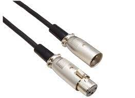

機材の目次
そもそもどんな機材があるの？
アカペラは機材とは切っても切れない関係。外部のライブに出る時は機材は必要だし、サークルとかに入ってる場合は内部で機材を持ってて使うこともあるよね。 今回はアカペラで機材を使う時必要になる機材について説明していくよ。まずは機材の種類について見ていこう。
録音機材については使い方の部分で詳しく話していくからちょっと待ってね。 じゃあ次はこれらの機材がどのような役割を果たしているのかを理解しよう。
各機材の説明
ここからは各機材について一つ一つどういう機材なのか説明していくよ。
ミキサー
ミキサーはマイクからの音を受け取って編集することができる機械だよ。
ミキサーを使うことで特定のパートの人の音を大きくしたり、パーカスのバスの音を重くしたり、機材によってはエコーをかけたりすることもできるよ。
マイクから入った音はミキサーを通してスピーカーへと流れていくんだ。そして流れていった音がスピーカーによって大音量で流れるみたいな感じだよ。
ミキサーの機能によってできる機能とできない機能とあるからその辺は今は省略するね。
スピーカー
スピーカーはミキサーを通して受け取った音を増幅して音を出す機械だよ。このスピーカーによって大きな音がでるようになっているんだ。
この間にアンプっていう機械を挟むことが多々あるよ。アンプっていうのは英語のアンプリファイア（amplifier）から来ていて「増幅する」っていう意味がある。 スピーカーとの違いはアンプは音を増幅するだけでアンプ自体から音を出すことはできない。だからミキサーとスピーカーの間に接続するのが基本だよ。
ケーブル
コードとも言われるね。ケーブルについてはみんなもなんとなく知っていると思うけど、各機材をつなげる役割をしているものだよ。マイクとミキサーを繋いだり、ミキサーとスピーカーを繋いだり。
アカペラの機材でよく使われるケーブルの接続端子について知っておこう。
これがマイクで使われるケーブル端子だよ。

このケーブルはマイクを実際に使ったことある人なら見たこともあると思うんだけど、この端子はXLRっていうんだ。
オスメスがそれぞれあって、基本的にはメスがマイクに繋げる側、オスがミキサーだったり、スピーカーに繋げる側だよ。
覚え方としてケーブルの中を音が通る時はケーブルのメス側からオス側に向かって音が流れるってことを覚えておこう。
マイク
最後はマイクだね。みんなご存知の通り声を実際に入れる機械だよ。
アカペラでよく使われるマイクは2種類だからそれについて知っておこう。
SM58

一つ目はSM58だよ。一般的にはこれがよくみんながイメージするマイクだと思う。 アカペラを9年やっている筆者がアカペラで一番よく使われるイメージのあるマイクがSM58っていう種類のマイク。（上の画像） アカペラの練習をするときにスタジオを借りることが多々あると思うんだけど、そのスタジオで一般的に借りられるマイクは基本これ。 なんでかっていうととても性能が良くて安価だから。
e900シリーズ
もう一つ知っておいていいと思うマイクがこのマイク。e900シリーズのマイクだよ。
筆者がよく見るのはe935ってやつかe945ってやつかな。
アカペラでは主にベースとパーカス用マイクとしてたくさん使われているマイクだよ。
SM58と何が違うかっていうと単一指向性っていうタイプのマイクでSM58はマイクヘッドに対して全方位の音を拾うんだ。だからマイクに入れてる声の他にも周りの環境音がすこーし入ることもある。
一方でこのe900シリーズのマイクはマイクヘッドの正面、つまりマイクが向いてる方向の音をよく拾うようにできてるんだ。だからクリアな音が入りやすい。
アカペラではベーパ用マイクとしてよく使われているけど、e900シリーズで調べると、ボーカルマイクとしても一般的にはよく使われているね。
機材の使い方
ここからは機材を使う上で必要な知識について書いていくよ。 機材は繊細な部分もあるから使い方を知ってないと壊しちゃうこともあるから注意しよう。
ミキサー
ミキサーはだいたいこんな感じになっているよ。
ミキサーにもいろんなミキサーがあるから一概に全部のミキサーがこんな感じになってるわけじゃないけど大抵大きめなミキサー買うとこんな感じになってるよ。
各部分について一つ一つ見ていこう。
・マイク接続部分
ミキサーの一番上の段にあるのはマイク接続部分だね。さっきケーブルの部分で書いたXLRのメスの接続端子がついてるよ。 ここにケーブルを刺してマイクを繋げてマイクから音を入れるんだ。つまりここから音が入ってきて、それをスピーカーへと送るみたいなイメージでいてくれればOK。
・gain
次に書くのはgainって書かれた部分だよ。（上の画像でいうと赤いつまみに当たるね。）gainっていうのはマイクヘッドからマイクに入る音の量を調節することができるんだ。
gainっていうのは英語で「獲得する」っていう意味があって、音を取るっていう意味。つまりマイクが音を拾う量を調節する意味とも捉えられるよね。
このgainを調節するとハウリングを押さえたりすることができるんだ。ハウリングについて少し知っておこう。
ハウリング
ハウリングっていうのはスピーカーからでた音がマイクに入って音が永遠に増幅されてループして金切り音みたいな音が鳴る現象のこと。
みんなもどこかでスピーカーから「キーン」ていうすっごく高い金切り音みたいな音が鳴るのを見たことある人もいると思う。
スピーカーっていうのはマイクから入った音をとてもデカくして発する機械だったよね。そのでかい音がマイクに入るとさらにデカくなってスピーカーから出される。
このループが繰り返されることであの「キーン」っていうとてもでかい音が鳴るんだ。
これを防ぐ一つの方法がさっきのgainのつまみになるんだ。ハウリングが起こる原因はスピーカーから出た音がマイクに入ることにある。
っていうことはスピーカーから出る音を小さくするか、マイクが拾う音を小さくするかのどっちかになるんだ。
前者はスピーカーの音量のつまみを下げれば収まるんだけど、ライブとかになるとスピーカーから出る音を小さくするわけにはいかないよね。
そういうときにgainのつまみを下げてあげるとマイクが拾う音が減ってくれて、スピーカーから大きい音を出してもマイクが拾わなくなってハウリングが止むっていう仕組み。
ハウリングは結構度々起こるからぜひ覚えて活用してみてね。
・High・mid・low
次はhigh・mid・lowの3つのつまみについて説明するよ。このつまみは音の高さに合わせてそれぞれの成分を切る（音を入らなくするって意味）、もしくは増幅するつまみになるよ。
実際に使ってみた方が早いんだけど、ここでも一応書いておくね。
声の音っていうのは一つの音がずっとなってるわけじゃなくて、声の中にはたくさんの高さの音の成分があるんだ。
アカペラしてると例えばベースって高い音を使わないから高い部分の音は入れなくていいこともあるよね。
そういうときにベースマイクが繋がっているチャンネルのhighのつまみをマイナス方向に回すと高い音が入らなくなるんだ。
こうやっていらない成分を細かく削ぎ落としていくと、録音とかするときにとてもクリアな録音をとることができるんだ。
アカペラしてると録音とるタイミングはいくらでも出てくるから少しでもクリアな録音が欲しい時はぜひ意識してみてね。
volume
最後にボリューム部分について説明するよ。ミキサーの一番下にある上下するつまみの部分だね。
わざわざあまり書く必要はないかもしれないけど、ここはスピーカーへと送る音量を調節する部分になるよ。
つまみを上にスライドさせればさせるほど大きな音になってスピーカーへと音が送られる。
最終的にはさらにスピーカーで音をでかくすることで大きな音となってスピーカーから音が出る仕組みになるよ。
アカペラでは録音するときに特に各パートの音量バランスを調節する目的で使われることが多いかな。ベース大きすぎたらボリューム下げてみたり、リードが聞こえなかったらボリュームを上げてみたり。
実際に触ってみて、音量がでかくなったり小さくなったりするのを実感してみて。
録音機材
ここからは録音機材について説明していくよ。録音機材はサークルでも使うことが多いだろうからしっかり理解しておこう。
※各サークルによって使う機材の種類は違うと思うから細かい使い方はそっちを参照してね。今回はあくまで一般的な説明をするよ。
・録音機材の接続
録音機材は基本的にミキサーとスマホ（今よく録音する機械はほとんどスマホだよね）の間に接続するものだよ。 ミキサーから音を録音機材に送ってそこで録音するための音に録音機材で変換してスマホに録音する音を送るという流れになるよ。
・録音機材とミキサーの接続方法
録音機材とミキサーをつなげるケーブルには次のようなケーブルを用いるよ。
これはラインケーブルって呼ばれてるケーブルだよ。赤白のケーブルの方がミキサーに接続する部分。もう片方が録音用機材に接続する部分だよ。
録音用機材に接続する側の端子は機材によって様々だからこれだけとは言えないからそこは各機材に合わせて接続してね。
※ちなみにこのようなラインケーブルを使って行われる録音をライン録音って言うよ。普通の録音と違って環境音がほぼ一切入らないからクリアな録音が取れるよ。
・ラインケーブルをミキサーのどこに刺すの？
よくある間違いとしてラインケーブルをミキサーに刺すときに刺す部分を間違えていることが多々あるんだ。
だから録音するときにどこに刺すべきなのかちゃんと知っておく必要があるよ。
さっきも書いた通り録音機材っていうのはミキサーから受け取った音をスマホへ送るための機材だったよね。
ということはミキサーに接続する部分はミキサーから音を送るための部分に接続しなくてはならないということだね。
ミキサーの右上あたり（にあることが多いイメージが筆者はあります）にLINE OUTって書かれた部分があるかなと思う。（ものによってはSTEREO OUTって書いてあるものもあると思う）
そこがミキサーから音を他の機材に送る接続部分になるよ。ラインケーブル用とXLR用とケーブル接続端子があると思うからラインケーブルの方に刺して、録音用機材と繋いでくれれば録音できるよ。
※LINE OUTとSTEREO OUT両方あるものもあると思う。その時は多分切り替えするためのボタンがどこかにあると思うから探してみてね。
機材の接続方法
最後に機材の接続について書いていくよ。基本的に使われるケーブルは決まってるからここで覚えてしまおう。
・用意するケーブル
まずは用意するケーブルについてみていこう。
- XLRオス-メスケーブル
- 各機材（スピーカー、ミキサー）の電源ケーブル
- （録音する時は）ラインケーブル
・まずはミキサーとスピーカーの電源
まずはミキサーとスピーカーの電源ケーブルを使ってコンセントに繋ごう。多分ミキサーもスピーカーも購入時に電源ケーブルがついてくるからそれを使おう。 これが接続されていないと、スピーカーから音は出ないし、ミキサーが意味を成さないからちゃんと接続されてるか確認しよう。
※電源はまだつけないでね！電源つけるときに注意があるから後で書くよ！
・次はマイクとミキサーを繋ごう
次はマイクとミキサーを繋いでいこう。使うケーブルはXLRオスーメスがついたケーブルだよ。
マイクと繋ぐのはXLRのメスの方だよね。そしてさっきミキサーの部分で書いたマイク接続部分にXLRのオスのケーブルを刺せばマイク接続完了だよ。
マイクの音をいじる時はそのチャンネル部分のつまみをいろいろいじれば音をいじることができるよ。チャンネル毎に分かれてるからそこは注意してね。
・最後にミキサーとスピーカーを繋ごう
じゃあ最後にミキサーとスピーカーを繋ごう。ここを繋がないとスピーカーから音を出せないよ。
さっきの段階でマイクからミキサーに音を流すケーブルは接続できたからここからはミキサーからスピーカーに音が流れるようにしていこう。
ミキサーから音を流すための端子はさっきの録音機材の接続でやった通りミキサーの右上にあるLINE OUT（もしくはSTEREO OUT）のXLRのオスの端子だったよね。
そことミキサーの背面部分にあるXLRのメスの端子をXLRケーブルで繋いであげればOKだね。
あとはスピーカーのつまみから音量を出すように調節すれば、全ての機材の接続が完了だよ！